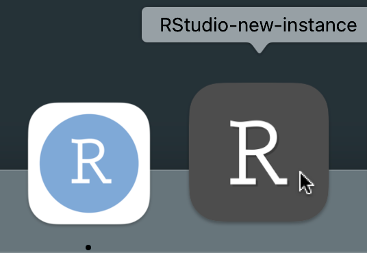

Introduction: how to open a second instance of RStudio Desktop on macOS
On macOS when RStudio Desktop is open it can be inconvenient to open a second (or third or fourth) instance of it.
For example, it’s not possible to simply click the icon in the dock (or right click on that etc.) as we might do on Windows.
Within RStudio Desktop we could select File | Open File… or File | Open Project… but I’ve never found that very intuitive and somehow I’ve never got used to using RStudio’s command palette.
If you have several directories configured as RStudio projects (with .Rproj) files you could open those from the top right project drop down menu or double click them from within Finder.
It turns out that in a terminal we can issue the following open command to achieve opening a new instance of RStudio Desktop (note RStudio Desktop needs to be installed in your Applications directory for this to work).
open -n -a RStudio.app
Making an Automator app to open a new instance of RStudio Desktop
macOS comes with Automator, open that from your Applications directory.
Then select File | New and select Application and click Choose.
Then from the left most menu select Utilities and double click Run Shell Script.
In the main window on the right, leave the shell as zsh and replace the cat text in the box with the open command above.

Then press Cmd + S or File | Save and save your application in your Applications folder.
Give the app a distinct name such as RStudio-another.app or whatever you prefer and then quit Automator.
Next we would like our app to have a nice icon.
- First download a nice icon from say this repo of logos kindly designed for RStudio (I chose the dark one).
- Then navigate to the our new app in Finder and press Cmd + I.
- Then drag the .icns file onto the icon in the top left corner of the info box.
And tada your app will now use this icon!
And you can even drag the app from Finder onto your dock from where you can simply click the icon to open as many instances of RStudio Desktop as you like.

Summary
We have created an Automator application which runs a shell script to open a new instance of RStudio Desktop. We have then given this application a new icon and we have placed this on our dock.